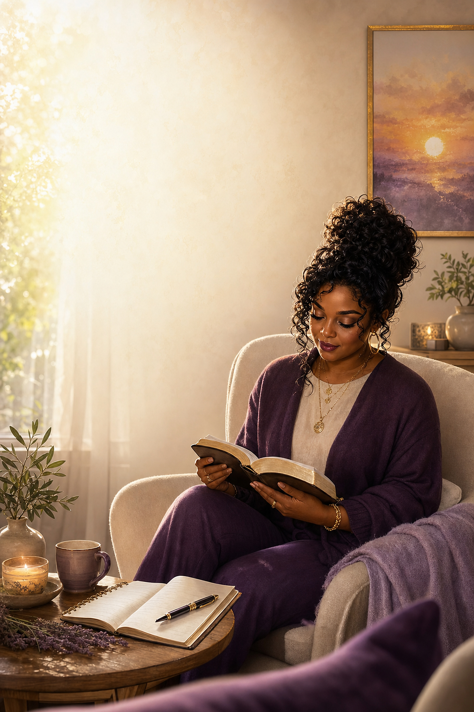

Day 01 · Held
Wonderfully Made
Before the world named your flaws, God called His workmanship wonderful. Let His voice be the loudest one in the room today.
- Scene family
- intimate-faith-collage
- Status
- Internally qualified; author review
- Text zone
- upper-left
Generation prompt
Use case: ads-marketing Asset type: 6 x 9 portrait visual devotional journal page background Day theme: Wonderfully Made. Emotional center: Before the world named your flaws, God called His workmanship wonderful. Let His voice be the loudest one in the room today. Scene/backdrop: A luminous early-morning prayer corner in a tasteful contemporary home. A joyful adult Black woman with natural curls in a loose high bun sits in a cream chair reading an open Bible. A journal, fountain pen, candle, tea cup, small olive plant, folded lavender throw, and framed abstract sunrise create rich but orderly devotional storytelling. Place her in the lower-right third and preserve broad softly lit cream negative space on the upper-left. Style/medium: Premium Christian publishing art with cinematic painterly-photographic realism, tactile detail, mature emotional warmth, natural anatomy, and the visual confidence of a finished gift-book page. The supplied reference pages guide richness and immediacy only; do not copy them. Composition/framing: Vertical 2:3 portrait. Keep the designated upper-left typography zone visually calm and unobstructed while the rest of the frame tells a complete story. Lighting/mood: Luminous, hopeful, emotionally honest, peaceful without becoming bland. Use strategic shadow to make the light feel pure and earned. Color palette: #5b2b72, #9a66ad, #f7efe2, #d6a34d, #17233d. Constraints: Generate artwork only. Absolutely no text, letters, numbers, logos, labels, signs, watermarks, pseudo-writing, or readable marks anywhere. Keep people dignified, modestly clothed, age-appropriate, and anatomically natural. Print-safe focal clarity. Avoid: copied layouts, generic stock worship poses, plastic faces, malformed hands, extra fingers or limbs, bleak grading, giant glowing crosses, illegible decorative text, and clutter inside the typography zone.